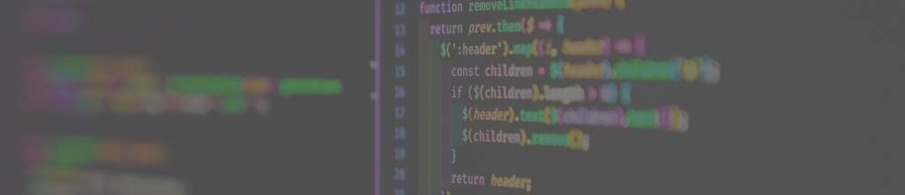

Curriculum vitae
Expériences
- Développeur python Scop Le Filament, depuis septembre 2023 à Toulouse: développement open-source de solutions Odoo, principalement pour des acteurs de l'Économie Sociale et Solidaire.
- Ingénieur cybersécurité système embarqué Thales AVS, de mars à septembre 2023 à Toulouse: analyses de risque sur systèmes avioniques, SAST sur le code embarqué.
- Stage de fin d'étude État-Major des Armées, d'avril à octobre 2022 : Contenu confidentiel.
Travaux
- [FR] Modélisation statistique de réseaux sociaux multiples: memoire.pdf Septembre 2022 : Dans ce mémoire, un modèle statistique est proposé pour étudier un ensemble de réseaux sociaux, où interagit le même groupe d'acteurs. On appelle ces réseaux intriqués des « réseaux multiples ». Au-delà d'étudier les liens au sein de chacun des réseaux, le modèle proposé extrapole les informations entre les réseaux afin d'obtenir de meilleurs résultats en termes de prédiction et de qualité d'ajustement. Le modèle s'appuie sur une extension hiérarchique du modèle d’espace latent, en supposant l’existence d’une position sociale « globale » pour chaque acteur, ce qui permet d’avoir différentes approches pour chaque rôle social. La proposition a été mise en pratique avec plusieurs jeux de données réels, en considérant divers types de relation.
- [EN] Sécurisation des communications Bluetooth Low Energy en milieu médical: 1570766553 paper.pdf Juillet 2021 : Les services de santé utilisent de plus en plus l'internet des objets (IoT) pour acquérir des données physiologiques en temps réel. Les données médicales sont soumises à des exigences de sécurité strictes pour les données échangées entre les objets connectés. En l'absence d'interfaces clavier/écran dans plusieurs IoT, l'utilisation du code pin par défaut dans la phase d'appairage utilisant Bluetooth Low Energy (BLE) est très peu sûre et expose l'échange de données à plusieurs attaques de sécurité (écoute clandestine, usurpation, etc.). L'objectif de cet article est de proposer une nouvelle approche pour empêcher l'écoute clandestine et l'usurpation en se basant la distance entre les appareils, qui est dérivée de l'indicateur d'intensité du signal reçu (RSSI). Ainsi, elle peut être utilisée pour détecter une distance anormale résultant d'une connexion pirate à l'aide d'une méthode statistique. Nos résultats expérimentaux montrent que notre approche permet d'obtenir une bonne précision avec un faible taux de fausses alarmes.
- Stage conventionné de trois semaines auprès de Christophe Negre, maître de conférence 2020 : Découverte et développement de virus et vers informatiques sous environnement Unix.
- De nombreux projets universitaires Depuis 2017 : Projets en intelligence artificielle, robotique, cryptographie et dans nombreux domaines. Voir sur Github ou quelques rapports.
Formations
- Master Cybersécurité & eSanté à l’Université de Paris 2020-2022: Major de promotion, mention bien.
- MOOCs de l'ANSSI, la CNIL, la DRSD et Udemy 2020-2021: Formations en sécurité informatique, le RGPD, le secret de la défense et le hacking.
- Licence informatique à l’Université de Perpignan 2017-2020 : Classé deuxième, étudiant tuteur et ambassadeur.
- Baccalauréat scientifique spécialité mathématiques 2017 : Mention très bien, option euro anglais.